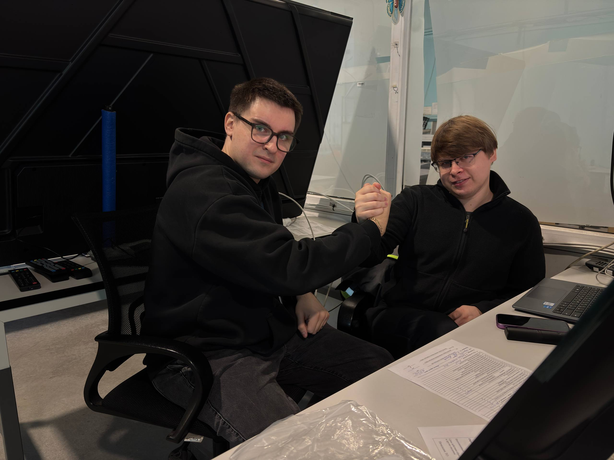
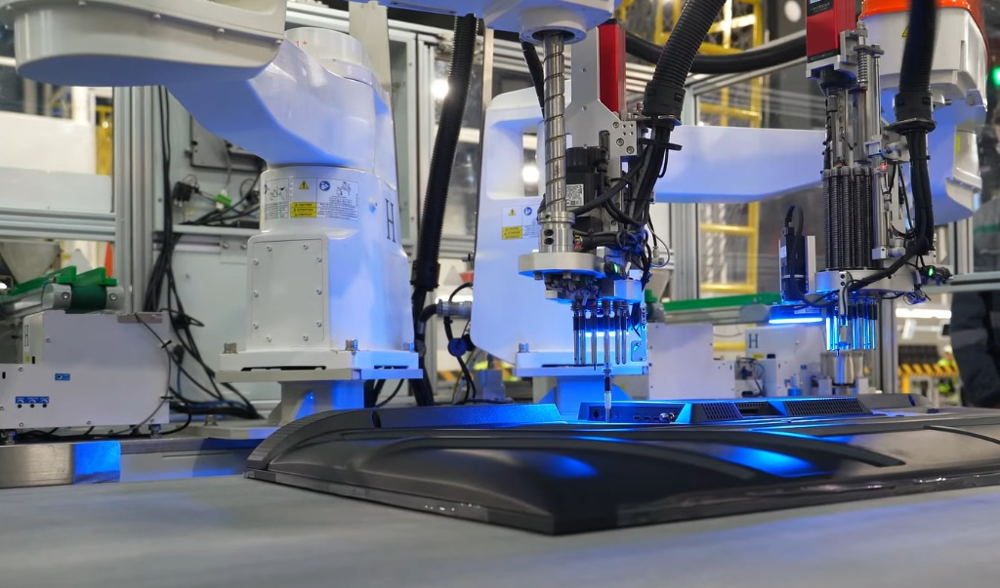
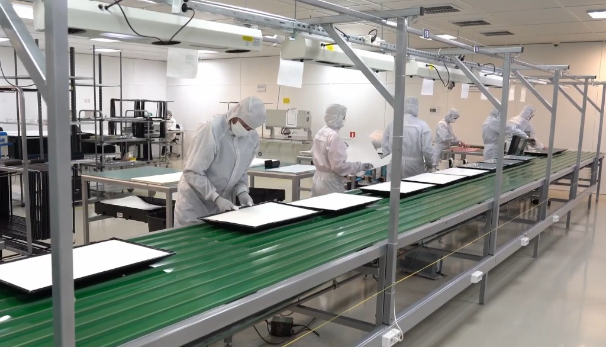

Структура программы (6 этапов):
Регистрация и оценка режима труда и отдыха, эргономики, питания и знаний безопасности.
Анализ рабочих ситуаций на конвейере, у промышленных роботов, стендов HiPot и 6 столпов здоровья.
Итоговая проверка, индивидуальная диаграмма результатов и подключение цифрового помощника.
Оценка образа жизни и исходных знаний по безопасности труда
Выберите варианты ответа, которые наиболее точно отражают вашу повседневную практику. Прогресс сохраняется автоматически.
Коллега, рассмотрим характерные ситуации производственной среды и повседневного режима
Современное телевизионное производство включает конвейерные линии прогона, роботизированные комплексы паллетирования и монтажа, автоматические стенды проверки электробезопасности (HiPot) и участки «чистой комнаты». Ниже представлены шесть типовых ситуаций: переключайте вкладки в карточках, чтобы сопоставить факторы риска и нормативный порядок действий.
После ознакомления с производственными ситуациями перейдем к систематизации шести базовых составляющих культуры здоровья.
Физиологический ресурс и безопасность профессиональной деятельности
Работа в инженерно-технологическом отделе и на сборочных участках сочетает умственную нагрузку при разработке технической документации, зрительное напряжение при контроле экранов и физическую активность на конвейере. Устойчивая работоспособность и профилактика профессионального утомления опираются на единство трех компонентов: знания нормативов, осознанной ценности здоровья и регулярных профилактических действий.

Понимание закономерностей физиологии труда, гигиены сна и зрения, а также требований охраны труда (Постановление Минтруда № 53, СТБ ISO 45001-2020).
Восприятие собственной безопасности, сохранения зрения, здоровья позвоночника и нервной системы как приоритетной личной задачи.
Повседневная реализация правил безопасности у оборудования, соблюдение режима питания в обеденный перерыв и гигиены восстановления.


Шесть базовых составляющих культуры здоровья:
Оценка годовой нагрузки: кофеин, сахар и никотин
Ориентировочный расчет за 1 рабочий год (250 смен) при регулярном потреблении сладких кофеинсодержащих напитков (≈54 г сахара в 0,5 л; средняя стоимость ≈3,5 BYN) и никотиновых пауз (≈5 мин сосудистой реакции на эпизод; ≈0,35 BYN):
Практикум: микропауза на 20 секунд
Упражнение для снятия спазма аккомодации после осмотра матриц и нормализации дыхания при высокой производственной нагрузке:
Оставаясь на рабочем месте, переведите взгляд с экрана на удаленный объект (не менее 6 метров), расслабьте плечи и дышите ровно.
Контрольное тестирование
Ответьте на 12 вопросов итогового блока, чтобы сопоставить результаты, получить разбор по каждой теме и сформировать индивидуальный профиль в Telegram-боте.
Участник, проверим усвоение практических правил
Включает 8 контрольных вопросов по разобранным производственным ситуациям и 4 вопроса для настройки вашего индивидуального ориентира.
Участник, ваш индивидуальный профиль сформирован
Ознакомьтесь с показателями по четырем блокам образа жизни, динамикой знаний и подключите Telegram-помощника.
Профиль культуры здоровья
Соотношение показателей по блокам (%)
Анализ ответов по 8 темам безопасности и гигиены труда
Сопоставление ваших ответов во входном и итоговом тестировании с нормативными правилами:
Подключение персонального бота-помощника
Отсканируйте QR-код камерой смартфона или нажмите кнопку ниже. Ваш профиль диагностики и выбранный ориентир автоматически привяжутся к боту: в рабочие дни он будет направлять краткие напоминания по графику смен (включая обеденный перерыв в 11:40 / 12:00) и поможет отслеживать личный прогресс.
Открыть бота-помощника в Telegram →